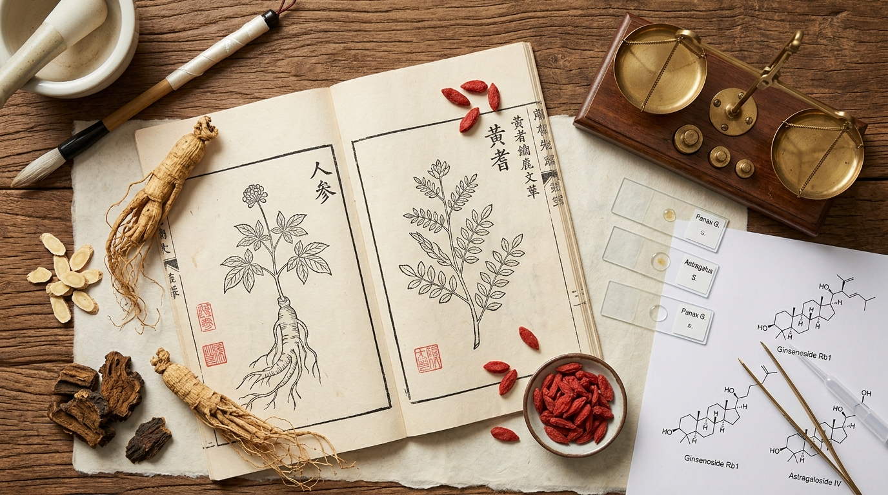
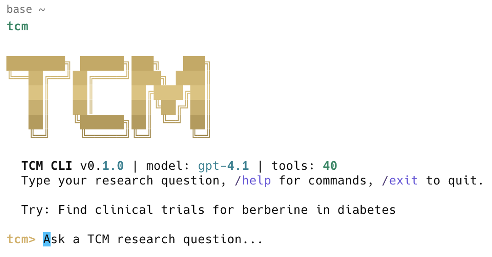

Multimodal Traditional Chinese Medicine, from Classical Canon to Molecular Graph.
TCM Studio & CLI unifies Four-Examinations CIE L*a*b* vision & pulse diagnostics (望闻问切), 45+ computational pharmacology & clinical safety tools, and unified routing across 35+ SOTA foundation models in a single verifiable research instrument.
tcm studio --open

Four-Examinations Diagnostics, Grounded in Optical & Acoustic Telemetry
Instead of opaque text prompts, TCM Studio extracts objective CIE L*a*b* chromatic coordinates, pharmacognosy tissue landmarks, Eastern Han posology ratios, and radial sphygmogram harmonics before invoking syndrome synthesis.
脾虚湿盛证 — Pale Swollen Scalloped Tongue
Elevated luminance (L* > 72) with attenuated erythroid chrome (a* = +11.2) indicates diminished Qi-Blood perfusion to the lingual papillae; marginal dental indentations reflect interstitial fluid retention from impaired Spleen transformation.
tcm -i tongue_specimen.jpg "Quantify L*a*b* & differentiate syndrome"
菊花心 (Chrysanthemum-Heart Radial Striations)
Authentic Inner Mongolian Astragalus membranaceus var. mongholicus exhibits a bright pale-yellow wooden core with fine, radiating vascular rays and micro-fissures resembling an open chrysanthemum blossom — immediately distinguishing it from non-radiating woody substitutes.
Astragaloside IV ≥ 0.080% (HPLC-ELSD) · Calycosin-7-O-β-D-glucoside ≥ 0.020%
AMPK, AKT1, NOS3, NFE2L2 (Nrf2), TNF — Immunomodulation & endothelial protection.
本草綱目 · 人參 — Vertical Folio Transcription & Weight Calibration
Extracts traditional unpunctuated characters from Ming/Song woodblock engravings and handwritten clinical prescriptions, resolves historical variant glyphs (異體字), and converts Eastern Han weights to modern Pharmacopoeia gram dosages.
陳氏藏書 (Chen Family Archival Collection) · Folio 35 (頁三十五)
41.4 g total decoction yield (13.8 g per single draught when divided into 三服).
弦脉 (Wiry / String-Taut Pulse) — 端直以长，如按琴弦
Elevated tidal wave amplitude (h3/h1 = 0.78) with broadened systolic plateau (w/t = 0.29) reflects heightened peripheral arterial smooth-muscle tone — classically correlated with Liver Qi constraint, Shaoyang pivot disharmony, pain syndromes, or phlegm-retention.
h3/h1 = 0.78 (High Vascular Tension) · w/t = 0.29 · h4/h1 = 0.56
Jun-Chen-Zuo-Shi Decomposition Meets Network Pharmacology & Safety
Inspect classical prescriptions or challenge the safety engine with Eighteen Incompatibilities (十八反) and Herb–Drug CYP450 / anticoagulant interactions before opening the full force-directed graph in TCM Studio.
四君子汤 (Si Jun Zi Tang)
| Role (配伍) | Materia Medica | Dosage | Meridian & Nature |
|---|---|---|---|
| 君 Sovereign | 人参 Panax ginseng | 9 g | Sweet, Warm · SP, LU, HT |
| 臣 Minister | 白术 Atractylodes macrocephala | 9 g | Bitter-Sweet, Warm · SP, ST |
| 佐 Assistant | 茯苓 Poria cocos | 9 g | Sweet-Bland, Neutral · HT, SP, KI |
| 使 Courier | 炙甘草 Glycyrrhiza uralensis | 6 g | Sweet, Warm · All 12 Meridians |
$ tcm "Network pharmacology of 四君子汤"
35+ Frontier & Open-Weight Models, One Deterministic Clinical Interface
Route multimodal tongue diagnostics, ancient Bencao OCR, multi-hop network pharmacology, or air-gapped hospital workloads across Anthropic, OpenAI, Google DeepMind, Chinese Frontier labs, xAI, Mistral, and local Ollama weights.
claude-opus-5-5 · Visual specialist: gpt-6.1-terra · TCM Bilingual Vision: qwen-vl-max
tcm model set claude-opus-5-5
| Provider | Model Name | Model ID (Click to Launch) | Context | Modalities | TCM & Pharmacology Strength |
|---|
Deterministic Biometrics + Multi-Step Tool Verification
Every query traverses a grounded four-stage scientific loop across 15 domain modules and 10+ live biomedical knowledge bases — eliminating unverified dosage or target hallucinations.
Optical, Acoustic & Query
Ingests tongue photography, decoction-piece macro images, woodblock PDFs, pulse/symptom descriptors, or natural-language research prompts in English or Chinese.
CIE L*a*b* & Task Graph
Computes lingual chromatic coordinates & somatotopy vectors, decomposes complex clinical questions into ordered sub-goals, and selects optimal domain tools.
Pharmacopoeia & Bio-Graph
Queries ChP monographs, TCMSP, PubChem, ChEMBL, UniProt, STRING, KEGG, Open Targets, PubMed, and ClinicalTrials.gov with deterministic Python execution.
Safety Gate & Citation
Enforces 十八反/十九畏, toxic herb decoction rules, pregnancy alerts, and CYP450 checks before returning cited bilingual conclusions and exportable reports.
Tongue CIE L*a*b* colorimetry, herb slice vision ID, ancient prescription OCR, Four-Examinations fusion.
ChP monograph lookup, Four Natures & Five Flavors filter, Paozhi processing comparison, dosage bounds.
君臣佐使 role decomposition, symptom-driven modification rules, classical posology conversion.
Eight-Principles (八纲), Zang-Fu, Six-Channel (六经), and Wei-Qi-Ying-Xue pattern differentiation.
SMILES/InChIKey lookup, Oral Bioavailability (OB ≥ 30%), Lipinski/DL screening, RDKit descriptors.
Herb → Compound → Target → KEGG/GO enrichment network construction & hub-gene centrality.
Herb–Drug CYP450/P-gp metabolism checks, anticoagulant/antiplatelet synergy, narrow-TI alerts.
十八反 Eighteen Incompatibilities, 十九畏 Nineteen Antagonisms, pregnancy & hepatorenal screening.
WHO 361 standard acupoint anatomy, needling depth/angle, synergistic point prescriptions.
Full-text clause retrieval across Huangdi Neijing, Shanghan Lun, Jin Gui, and Bencao Gangmu.
12 Primary & 8 Extraordinary vessel pathways, Zi-Wu Liu-Zhu (子午流注) chronobiology.
PubMed E-utilities RCT/meta-analysis search, ClinicalTrials.gov registry query, CONSORT-CHM grading.
ICD-11 Traditional Medicine chapter mapping, disease–syndrome–biomarker bridge.
Live REST connectors for UniProt, STRING PPI, ChEMBL bioactivity, Open Targets, and KEGG.
Sandboxed Python scientific computation for custom enrichment statistics, IC50 curves, and RDKit plots.

Supports @herb mentions, /model & /lang slash commands, image attachments (-i), and local Studio launch (tcm studio).
Deploy in Seconds — Terminal CLI or Local Web Studio
Requires Python 3.10+. Works out-of-the-box with remote biomedical APIs or completely air-gapped with local Ollama weights.
1. Isolated CLI via pipx
RecommendedInstalls tcm globally in a clean virtual environment and runs the interactive provider setup wizard.
pipx install tcm-cli && tcm setup
2. Full Scientific & Studio Stack
Extras: [all]Includes optional stacks: [chemistry] (RDKit), [ml], [analysis] (NetworkX/SciPy), and local tcm studio server.
pip install "tcm-cli[all]"
3. Launch Multimodal TCM Studio
Starts the local Python clinical engine on port 8765 and connects live SOTA model credentials to the Studio UI.
tcm studio --port 8765 --open
4. One-Line Shell Installer
macOS · Linux · WSLDetects Python/uv/pipx automatically and configures shell completions in a single step.
curl -fsSL https://raw.githubusercontent.com/tigerneil/tcm-cli/main/install.sh | bash
Can I use TCM Studio right in the browser without installing Python first?
tcm studio locally, the exact same Studio UI automatically detects /api/health and upgrades to Live Python Backend Mode.
How does TCM Studio prevent LLM hallucinations on toxic dosages or herb incompatibilities?
Can hospital or academic teams run TCM Studio & CLI completely offline for patient privacy?
tcm model set ollama/medgemma:27b, ollama/huatuogpt-vision:7b, or ollama/qwen3:32b (or any OpenAI-compatible local vLLM/SGLang endpoint) so tongue photographs, clinical notes, and prescription scans never leave your institutional network.